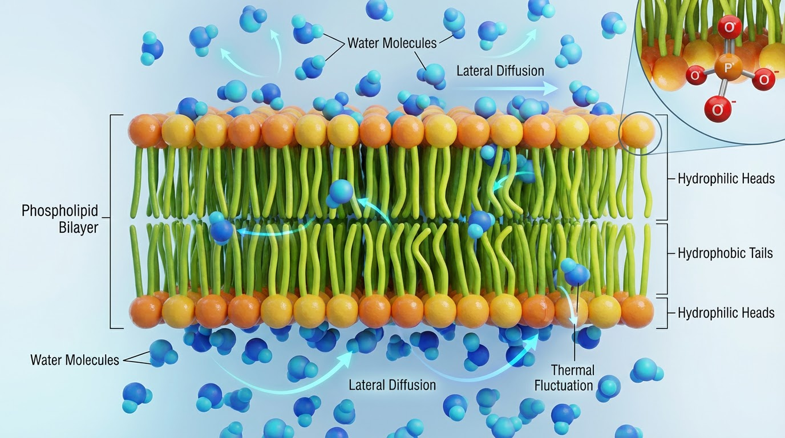

Dr. Sheeba Malik
Computational Biophysicist
Postdoctoral Research Fellow at Max Planck Institute for Dynamics of Complex Technical Systems, Germany
Computational Biophysicist
Postdoctoral Research Fellow at Max Planck Institute for Dynamics of Complex Technical Systems, Germany

I am a computational biophysicist specializing in large-scale molecular dynamics simulations, high-performance computing, and theoretical modeling of complex molecular systems.
My research focuses on lipid membrane phase behavior, interfacial water thermodynamics, solvent-biopolymer interactions, and transport phenomena in biological and biomass-derived materials.
With experience as PI and Co-PI on NSF ACCESS allocations, I have led multi-million core-hour simulation campaigns and developed optimized GPU-accelerated workflows.
Expert in all-atom simulations, coarse-grained modeling, umbrella sampling, and absolute binding free energy calculations.
Proficient in job scheduling using SLURM, parallel processing, and workflow optimization for large-scale simulations.
Specialized in interfacial water dynamics, phase transitions, lipid membranes, DNA, and cellulose dynamics.
Skilled in developing custom algorithms, data analysis, and statistical modeling for complex systems.
Experience with ML techniques such as TensorFlow, Scikit-Learn, and Keras for data-driven analysis in computational chemistry.
Demonstrated leadership in mentoring junior researchers, securing grants, and contributing to peer-reviewed publications.
Malik, S., Kneller, G.R., Smith, M.D., Smith, J.C.
Biophysical Journal, 2025
Gupta, T., Sharma, P., Malik, S., Pant, P.
Molecular Pharmaceutics, 2025
Malik, S., Karmakar, S., Debnath, A.
Journal of Chemical Physics, 2023, 158, 114503
Malik, S., Karmakar, S., Debnath, A.
Journal of Chemical Physics, 2023, 158, 091103
Malik, S., Debnath, A.
Chemical Physics Letters, 2022, 799, 139613
Malik, S., Debnath, A.
Journal of Chemical Physics, 2021, 154, 174904
Max Planck Institute for Dynamics of Complex Technical Systems
Magdeburg, Germany
Advisor: Prof. Matthias Stein
Conducting computational research on ion-selective membrane systems, hardwood lignin behavior in solvents of varying concentrations, and norovirus protein structure, dynamics, and binding interactions. Also supervising one PhD student on a protein-related project.
University of Tennessee & Oak Ridge National Laboratory
Tennessee, USA
Advisor: Prof. Jeremy C. Smith
Indian Institute of Technology (IIT) Jodhpur
Jodhpur, India
Advisor: Prof. Ananya Debnath
Thesis: "Dynamical Heterogeneity of Interface Water upon Membrane Phase Transitions"
BIO240114 | Apr 2024 - Mar 2026
Combinatorial effects of ABE fermentation products on lipid membrane structure and organization.
BIO240046 | Feb 2024 - Mar 2026
Dynamical Influences on Co-solvent Phase Separation in Biomass for Bioenergy Applications.
Received to present work at Biophysical Conference 2025.
Jul 2019 - Jul 2022
Awarded based on qualifying the GATE exam.
Max-Planck-Institute
Sandtorstraße 1
D-39106 Magdeburg
Germany
"Advancing molecular-level understanding of structure-dynamics relationships across biological and soft-matter systems"